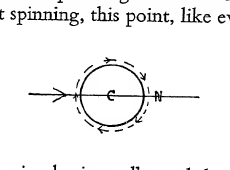
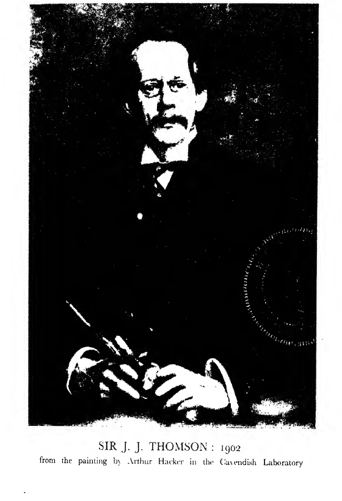

CHAPTER VI#
First and Second Visits to America. 1896, 1903.#
IN the autumn of 1896 my wife and I went to America to attend the celebration of the Sesquicentenary of Princeton University, at which I was to give a course of lectures on the Conduction of Electricity through Gases. We crossed in the Campania, then quite a new boat. When we reached New York there was some difficulty in getting our baggage through the customs. I had a suitcase full of congratulatory addresses from various universities and scientific societies in England. Each of these was in a cardboard cylinder. There had been some rioting and bomb-throwing about this time in America and the inspector at the Customs at once suspected bombs. He asked me what these cylinders were, and I said they contained addresses to Princeton University. He then asked why I was taking them. I said it was for their Sesquicentenary. “Oh!” he said, “I see, you’re a foreigner. But where’s Princeton anyhow?” I said it was quite close to New York. He said he had never heard of such a place, and appealed to another inspector, who said he had not either. He refused to let my baggage through. I then demanded to be taken to the head man. After some more talking he consented, and took me to his office. Very fortunately he turned out to be a Princeton man, who received me with enthusiasm when he knew my errand and was not at all pleased with his subordinates for what seemed to him incredible ignorance.
First Visit to America#
The morning after our arrival we went to Baltimore to stay with some great friends of ours who lived there. We were fortunate enough to arrive just in time for me to see the final round in a great baseball competition. One of my illusions was soon dispelled. I had always thought Americans as a race would show the characteristics of their ancestors who came over in the Mayflower, would be grave, undemonstrative, and would take their pleasures sadly. But though I was in one of the best places and surrounded by the most prominent men in the city-lawyers, bankers, doctors, professors and even clergymen-the game had only been going on for a few minutes when most of these were shouting at the top of their voices; some of them shouted so much that they lost the power of articulation and could only croak. I always myself get very much excited by a keen contest and feel for the moment that nothing on earth matters so much as that the side I am interested in should win, and probably if I had wished very much that one of the sides should beat the other and had understood the finer points of the game, I should have done as they did. I enjoyed the match thoroughly. I had never seen baseball before and it is a great game. The idea is the same as that of the English game of rounders in that the batsman, armed with a broomstick, tries to hit the ball so far that he has time to run to a base before a fieldsman can gather the ball, throw it at him and hit him; but there is as much difference between this and a good baseball match as between cricket played by boys in a side street with three white lines on a wall for the wicket, and the match between Gentlemen and Players at Lord’s. The fielding, i.e. the throwing and catching of a first-class baseball team, is superb and reaches a standard but rarely attained in English cricket. The pitcher, who corresponds to the bowler at cricket, throws, not bowls, the ball full pitch at the batsman, and by putting spin on the ball can make it swerve in the air either to the right or to the left, or up or down. This interests the physicist as well as the sportsman, for it is a striking illustration of the hydrodynamical principle that a ball moving through air always tends to follow its nose, the nose being the point on the ball which is in front. Thus if a ball is moving horizontally in the direction of the arrow, the foremost point on the ball will be N, the point right in front of the centre C. If the ball is not spinning, this point, like every other part of the ball, is moving horizontally, and the ball, following its nose, will do so too. But suppose the ball is spinning, as in the figure, about an axis at right angles to the plane of the paper, N, in consequence of the spin, will be moving downwards (this spin is what is called top spin in lawn tennis) and the ball will tend to follow it and will therefore dip; if the spin were in the opposite direction, the nose would be moving upwards so that the ball would tend to soar. If the axis of spin were vertical instead of horizontal, the nose N would have a sideways motion and the ball would swerve either to right or left. If the axis of the spin were not truly vertical or horizontal, the ball would both swerve and dip or rise.

A small line diagram showing a spinning ball in flight. The ball is drawn as a circle with centre marked C and a forward point marked N on the right. Curved arrows around the circle indicate rotation, while a long horizontal arrow through the figure indicates the direction of travel. The sketch illustrates how spin shifts the effective forward point and causes dip, rise, or sideways swerve.
We saw Baltimore under exceptionally favourable circumstances, for our host was a professor in Johns Hopkins University, and both he and his wife belonged to old Baltimore families. We thus saw much both of academic society and also of that representing the old social life of Maryland. I have never been in a city where the hospitality was more charming, more generous or more intimate than that of Baltimore. Everyone seemed to know everybody else and to call him by his Christian name, and generally omit the other. The result was that I knew the Christian names of a great many people but very few of their surnames. This was especially the case at the Maryland Club, known all over the world for the excellence of its cooking; indeed it has been called the “gastronomic centre” of the universe, and certainly I have never been in one where the cooking and the food were better. The standard of cooking in private houses is also very high. It is here that you get that excellent dish, Maryland chicken, at its best.
The country round Baltimore is the epicure’s paradise, the shores of the Chesapeake Bay supply abundance of oysters of many kinds. In a restaurant at which I had lunch, two pages of the bill of fare were occupied by the names of different kinds, some of these as large as those which Thackeray ate when he was in America, and which he said made him feel that he was eating a baby. The Bay too, is the home of the celebrated delicacy, the canvas-back duck, which plucks the celery from the bottom of the marshes while another duck, the red head, waits until the canvas-back comes to the surface and tries to rob him of the celery. This dishonesty seems to affect the flavour, for though the ducks are much alike and eat the same food, I have heard a Baltimorian, when he wished to describe adequately the monstrous stupidity of someone under discussion, say that he was so stupid that he could not tell the difference between a canvas-back and a red head.
I should think Baltimore must be a paradise for young girls, for the “debutantes”, i.e. the girls who have “come out” not more than a year ago, are the Queens of Society. It was for them most of the parties seemed to be given. Their parents placed the drawing-rooms at their disposal to entertain any guests they liked. For one year they reign, then they make way for the next crop.
Our hosts had a most delightful example of the old negro servant who had been in the family for many years, even before the liberation of the slaves. He took a keen personal interest in the guests, would advise them about what they should do and where they should go and whispered at dinner the wine he would recommend. His manners were so good that all this seemed quite natural and very agreeable. He had refused to leave when he had been liberated after the Civil War, saying that he had no opinion of free niggers. It takes some time before an Englishman gets to realise the feeling of Americans towards the coloured people. I was helped by the following incident. A kindly old gentleman was talking about Booker Washington, the coloured statesman who did wonders for the improvement of his race. He said, “I have always been accustomed to call a coloured man ‘Uncle’, but I felt it could not be right to call such a great man that. I could not bring myself to call any coloured man ‘Mister’, and I did not know what to do. At last I had a bright idea, and I called him ‘Professor’.”
Johns Hopkins University in Baltimore was, I believe, the first university to be founded where the primary consideration was research and not teaching. There were at first no undergraduates-the students had already graduated at some other university. The first President was Professor Gilman, and he had the very difficult task of selecting a staff of Professors suitable for this purpose. Among the earlier Professors were Henry Rowland, the great spectroscopist, whose investigations with diffraction gratings made in Johns Hopkins laboratory started a new era in spectroscopy; he spent most of the later years of his life in inventing and developing a printing telegraph, one which, like many now in use, would print the message as it was received (in this he was before his time and I am afraid did not gain much by it); Ira Remsen, Professor of Chemistry, who later became President; G. L. Gildersleeve, Professor of Greek.
Among the early students was Woodrow Wilson, subsequently President of the United States, who studied history for a year.
The new university had to fight against several disadvantages. Johns Hopkins had not been a popular citizen and people were reluctant to give money to a university called after him: again, most of the professors and students were northerners while Baltimore was distinctly southern, and in 1876 the feeling aroused by the war was still strong enough to make them unpopular. Indeed, though Johns Hopkins has been the pioneer of the “Research University” not only in the United States but in the world, it has never received, as it deserved to receive, benefactions comparable with those received by some other American universities. It now, I believe, does admit undergraduates, and by the aid of the State has been able to obtain adequate buildings on a fine site. I believe that when Johns Hopkins University first applied to the State for a grant, their representative (a Professor) had to go before a committee of town councillors. One town councillor was very anxious to find out how many hours a day a Professor spent in teaching, and asked the Professor this question. The Professor said it was a difficult question to answer, there were so many things to be taken into consideration. He was asked, “Does it take four hours a day?” He said, “Perhaps about that”. “What do you do the rest of the day?” he was asked. “Well,” he said, “some time was taken up in the preparation of his lectures.” “What! do you mean to say you do not know your lessons yet? If one of our school marms did not know her lessons, we should soon get rid of her.”
The preparations for the Presidential Election were in full swing when we were in Baltimore. It turned on the question of bimetallism and excited a quite exceptional amount of interest. The bimetallic candidate was Bryan, who was thought to have owed his nomination to his phrase “Thou shalt not crucify humanity on a cross of gold”, which ran like wildfire through the country. McKinley was the other candidate, and he supported the maintenance of the gold standard. I never knew an election excite such bitter feelings. The language of some highly respectable people gave one the impression that, if they could have killed Bryan without any danger of being found out, they would have done so without a moment’s hesitation.
After a most pleasant but too short stay in Baltimore we went on to Princeton for the delivery of my lectures, staying with Professor and Mrs Fine. Fine was the Professor of Mathematics and was a great friend of Woodrow Wilson, who, after he became President, wished to make him American Ambassador to Berlin. Fine, however, had to refuse it on account of the expense it would have entailed.
My lectures were very well attended and I was able to meet many of my audience under conditions more favourable for social intercourse than lectures. Princeton, of all the American universities I have visited, is the one most reminiscent of Cambridge. It is not surrounded by workshops or shops, but by spacious lawns studded with fine trees which recall the Cambridge “backs”. To a Trinity man, especially, it recalls Cambridge, for the gateway to one of the courts is copied from the Great Gate at Trinity. When I last visited Princeton after an interval of more than twenty years I found the resemblance still greater, for they had erected a beautiful building for the post-graduate school. I had the pleasure of dining there one evening, and, just as in Trinity, we dined in gowns and had a Latin grace, and if I remember correctly, port after dinner. The dinner was the more agreeable since Dean West, to whose exertions the school is mainly due, was in the chair.
Princeton#
The houses of many University Clubs along Prospect Avenue are a very interesting feature of Princeton. They are very attractive buildings and luxuriously furnished, though I was told that they were so well endowed through the munificence of old members that the charges to the undergraduate members were not extravagant. Those Clubs have played an important part in American history, for it was owing to them that Woodrow Wilson became President of the United States. It came about in this way: to be or have been a member of some of the clubs gave a man considerable social distinction, not only among his fellow undergraduates when he was at Princeton, but also for the rest of his life in most of the eastern States. The result was that some of the undergraduates thought that the most important thing they could do at Princeton was to “make”, i.e. get elected to, a good Club like, say, “Ivy”. They could not be elected until the end of their second year, so that their first two years were devoted to doing the things which they thought would best promote their election: unfortunately they believed that it was fatal to their chances if they did any work. This clearly called for reform, and Woodrow Wilson, when he was made President of Princeton in 1906, set to work to remedy it. He began by raising the standard required for entrance to the University, and supplemented the lectures of the Professors by the appointment of preceptors, who give individual attention to the students. Mere attendance at lectures is a very unsatisfactory method of teaching for any but the best student. The ordinary student needs someone who will explain his difficulties, set him essays and discuss them with him. This, which is the system employed in Cambridge Colleges, was to be the work of the preceptors. They would be constantly in touch with the undergraduates and could soon find out if they were not working. These, however, were only preliminaries to a much more fundamental scheme which Wilson had drawn up after consultation with the Professors at Princeton. On this scheme the Clubs were to be abolished and replaced by a number of Colleges, bearing to the University much the same relation as the Colleges at Oxford and Cambridge bear to those universities.[1] The Colleges were to be places where the undergraduates lived and had their meals. Each College was to have its own Master and staff of preceptors, and was to be an independent unit. Each undergraduate was to be a member of a College and live in it, and the members of a College were to have all their meals together, and to make this possible for the poorer students, these were to be of a very simple character. In American universities there are few, if any, scholarships for undergraduates, so that these, if they are not supported by their parents, have to earn enough themselves to enable them to stay at the university. A considerable number did this by acting as waiters in summer hotels, tram conductors during rush hours, delivering the morning newspapers and so on. This all takes time and work and those who had to do it were seriously hampered in their studies. To reduce the necessity for this extra work it is very important to keep university expenses down as much as possible, and life in Woodrow Wilson’s Colleges would necessarily be austere and a great contrast to that which had prevailed in their Clubs. In Oxford and Cambridge the problem of the poor student is solved by granting scholarships to undergraduates who have shown ability. There are a great number of these scholarships. For example, the Cambridge Colleges in 1934-35 granted from their own funds scholarships amounting in value to about £56,000. In addition to this, scholarships are awarded by some of the great City Companies and by the educational committees of the County Councils. In this way not a few undergraduates receive from scholarships an income sufficient to support them at Cambridge in a style which enables them to join fully in the social life of the place, to meet men of very different means, experience and opinions, to discover that a man may hold views which you regard as pestilential and yet be a very good fellow; to get, in fine, a wide knowledge of men and manners which will be of great service to them in after life.
There is a very great deal to be said in favour of this method, but it was not at the time possible at Princeton. Feeling in America regarded holding a scholarship as a loss of independence. It admired the grit and determination of the man who refused to accept money when he could earn it some way or another himself. The scholarship system seems contrary to the American spirit. Up to the time when he made these proposals Wilson’s success at Princeton had been unprecedented. He was liked by many and admired by all. He had the ear of the Trustees, who appointed a Committee to consider his scheme and report to them. They reported in favour of the scheme, and in June 1907 all but one of the Trustees voted for accepting the Report. It was not long, however, before opposition arose. This came chiefly from the older Princeton men who had been members of the Clubs. This was only natural; the Clubs were the places where they had made their most intimate friends; their most vivid and pleasant recollections of Princeton were associated with them. Of their attachment to and interest in Princeton there could be no doubt. They had found the funds for many beautiful buildings, and year after year had made up the deficit between income and expenditure.
There was at this time another question before the University which made the situation still more difficult. Dean West, a man much beloved by many old Princeton men, had started, some time before, the idea of having a residential College at Princeton for graduates who were engaged in study or research. The President favoured this idea, but thought it essential for the unity of the University that this College should be on the campus close to the other University buildings. Dean West was untiring in his efforts to raise funds for this College and a bequest of $500,000 was received on the condition that the College should not be on the campus. The President’s influence at this time was so great that this bequest was refused.
President Wilson#
The fight grew very fierce and, in its later stages, bitter. The President was adamant: he would not make the slightest concession. This attitude is certainly not diplomatic and, moreover, not likely to be successful. The result of the policy all or nothing is much more likely to be nothing than all, and so it was in this case. Another bequest for the graduates’ College, this time for $2,000,000, coupled again with the condition that it should not be on the campus, was accepted by the Trustees, who thought that with such an endowment the College, though it might not be in the best place, could yet be made useful to the University. Wilson’s scheme came before the Trustees again in October, and whereas six months before only one had voted against it, now only one was for it. The scheme was dead and the Clubs are still flourishing.
This defeat made his position as President intolerable, and he soon after accepted nomination for the Governorship of New Jersey. He was elected Governor of New Jersey in 1911 and in 1913 President of the United States.
This is a very interesting case. If he had been a diplomat he could probably, with the prestige and goodwill he possessed, have been able to carry a scheme which, though not all he had asked for, would have been sufficiently near it to make him think it would be worth a trial, and would have occupied his attention and kept him at Princeton for several years, and he would certainly not have been President during the Great War.
His career was a great tragedy. The last time I ever saw him was at a Levee at Buckingham Palace in 1919, when he was on his way to the Peace Conference. He was standing next to the King, and the guests filed before him and were presented to him. It seemed then possible, and some thought it probable, that he might in a short time be in a position to exert greater influence over the affairs of the world than any man ever had; yet twelve months after he had lost his influence even in his own country. It was not the failure to secure the Treaty he proposed that was most significant. That Treaty seemed to ignore the fact that there had been a war, that for four years France and England had been suffering without intermission unparalleled losses of men and money, bitter grief and great distress, that France had been invaded and a large part of it laid desolate. Could it be expected that, with these bitter experiences fresh in their minds, France and England could proceed to discuss the Treaty as if they had not occurred, to put them out of their minds and consider only what would be the best for Europe in the distant future? Far more significant, I think, is his failure to bring America into the League of Nations. Some think that he could have done so if he had stayed in America, or if he had brought with him to Europe prominent members of the different parties: there were even some, among them Mr Arthur Balfour, who thought that, though he failed at the first attempt, he might ultimately have succeeded if his health had not broken down, for though he could not manage the Senate, few men have had his power of enlisting the people. Be these things as they may, the question arises, Might it not have been a good thing for the world if Wilson had succeeded, and is it not possible that in the future he may be greatly honoured as one who pointed out the right way though he could not persuade others to follow it?
One of the most interesting of my experiences was a visit to the Military Academy at West Point, the place where officers are trained for the American Army. I never had much belief in theories of education, but this shattered such as I had. In the first place, the State pays all their expenses and does not allow the students to have the control of any money: if they wanted a postage stamp for a letter they had, I was told, to go to the office and get it from there. After entering West Point they remain there without a break for nearly two years. To mitigate this isolation the Government provides a Guest House at which friends and relations of the students may stay at the week-end, when generally there are dances. The students have to attend a great many classes, but these are interspersed with riding, games and gymnastics, so that they certainly did not show any of the usual symptoms of over-study, but were a remarkably vigorous, well-set-up body of men.
I went to one of their classes; there was a belt of blackboards round the room; in front of them, the cadets were standing at attention: the subject was mechanics. The instructor asked me if I would take the class, but naturally I asked to be excused. He then called on one of the cadets and told him to prove the formula giving the time of swing of the simple pendulum. He began, “I am requested to …” but he got no further, for the instructor rapped on the table with his gavel and said, “You’re nothing of the kind, you are ordered-go on”. He went on and repeated absolutely verbatim the proof given in the textbook; even the lettering on the figure was the same. This method of learning by rote seems contrary to any reasonable theory of education, but the irony of it is that it produces excellent results. So much so that there is a great demand for West Point men by large employers of industry throughout the country, and there is great difficulty in holding them for the army. The fact is that discipline is the keynote of the system. The students are experts in discipline, a very important thing where large bodies of men are employed.
We returned from West Point to Princeton in time for the official proceedings of the Sesquicentenary. These lasted for three days and were brilliantly successful, the result of hard work for many months, magnificent organisation and the enthusiasm and generosity of Princeton graduates. The celebration was more than that of the Sesquicentenary of the old Princeton, which was not officially the University of Princeton but the College of New Jersey; it was that of the birth of the new University of Princeton. A large banner with “Ave Vale Collegium Neocaesarienses” on one side, and “Ave Salve Universitas Princetoniensis” on the other, hung over one of the arches, and there were innumerable flags showing the Princeton colours, orange and black. The weather was magnificent, and the tulip trees in the campus glowed in the orange of Princeton. It was rumoured that Mr Burbank, a great American gardener who seemed to be able to produce any kind of flower or fruit to order, had been commissioned to produce a chrysanthemum with both the Princeton colours, orange and black, but had not had quite time enough to get it just right.
The proceedings of the first day began with a sermon in the morning from the President of Princeton University, Dr. Patton. In the afternoon there was an address welcoming the delegates from other universities, given by the Rev. Howard Duffren, while President Eliot offered the congratulations of the American universities and learned societies, and I did the same for the European.
The second day began with the recitation of the Academic Ode by Dr. Henry van Dyke representing the Clio Debating Society, while the oration was delivered by Professor Woodrow Wilson representing the rival debating society, the American Whig Society. Woodrow Wilson’s theme was “Princeton in the National Service”. He maintained that by far the most important thing for Princeton to do was to give the kind of education best adapted for making them good citizens. “It should be a place where to learn the truth about the past and hold debates about the affairs of the present.” The oration, which was delivered with great dignity and with excellent elocution, roused the audience to the highest pitch of enthusiasm.
In the afternoon there was a football match between Princeton and the University of Virginia. It was my first introduction to American football and I enjoyed it very heartily. I have attempted on page 189 to give some account of the American game.
The day closed with a torchlight procession over a mile long which the President of the United States and his wife, Mrs Cleveland, came to see. A year had been spent in organising it. It was headed by a corps dressed in the uniform of the “Mercer Blues”, the Princeton regiment that fought in the Civil War. Their leader carried the sword General Hugh Mercer had worn at the battle of Princeton, and was followed by representatives of sixty “classes”, beginning with the class of 1839. There were lanterns and torches of almost every colour, but orange, the Princeton colour, overtopped them all, the others looking like specks of colour on an orange ground.
The morning of the third day was spent in conferring fifty-six honorary degrees. On the recipients and the delegates were to be seen the gowns of almost every university and academy, along with some of a type that had never been seen before. It was, I believe, the first time that doctors’ robes had been worn in America, and two at least of the American Professors had, with characteristic thirst for improvement, borrowed, from President Gilman of Johns Hopkins, gowns which he had brought home from Europe where he had received doctors’ degrees from several universities. They took these to their wives’ dressmaker and told her to select the best features of each and produce something stylish. The result was remarkable: they were the only doctors’ gowns I ever saw that had anything that could be called a good fit. These, however, went in at the waist and then billowed out into something very like a skirt in a very coquettish and most unacademical fashion. The President of the United States made a speech after the conferment of the degrees.
On Friday the delegates left Princeton, and many of them attended in the evening a dinner given by the University Club of New York. It was my good fortune to sit next a very celebrated New York physician, and when he heard that I was going to sail for England the next day, he asked if I was a good sailor. I said so far I had not suffered from sea-sickness. He said, “I was just going to say that I was sorry to hear it, but that is not quite what I meant. I meant that I was sorry that I could not be of service to you, for I have a remedy for sea-sickness.” I said I should be very glad to know what it was, for one never knew what might happen. “Well,” he said, “as soon as you get settled on board have a Manhattan cocktail and then slowly nibble dry biscuits. As soon as you feel it an effort to do this, take another cocktail and then begin again at the biscuits and so on. The theory of it is that you will be all right as long as you can take the biscuits; the cocktails are to make you want to do this.” I have never had occasion to test the remedy but I mention it because it sounds less disagreeable than any I have heard of. My wife and I sailed next day in the Lucania and, after an uneventful passage, arrived at Cambridge in time for the October Term.
Princeton University has developed greatly since the Sesquicentenary: it has now large and well-equipped laboratories in all the main branches of experimental and biological science. It has been able to attract Professors of great distinction, some of them, I am proud to say, old pupils of my own. It has been the source of many important discoveries, and has flourishing schools of research in many branches of science. It has lately received a munificent endowment of research from Mr Louis Bamberger and his sister Mrs Fuld, who have made an initial gift of $5,000,000 to enable students who have received the Ph.D. degree or its equivalent to continue their independent training and to carry on research with adequate support, without pressure of numbers or routine, and unharried by the need of obtaining practical results. A school for research in mathematics was established in 1933 with a staff of very distinguished Professors: it has already attracted a considerable number of students, some of them from Trinity College.
Second Visit to America#
My next visit to the United States was in the spring of 1903 when I went to give the first course of lectures under the Silliman Foundation. The lectures were on “Electricity and Matter” and were subsequently published as a book with that title by Scribners.
Yale University is at New Haven, the most populous city in the State of Connecticut. It was often called the “Elm City” from the number of avenues of elms which lined the principal streets. These at the time of my visit were a prominent and very pleasing feature of the town: shortly afterwards they were for a time destroyed through the ravages of the elm disease. It was my good fortune to be, throughout my visit, the guest of the very pleasant “Graduates’ Club”. The Club House was in the University and was frequented by many of its teachers. From informal talks with them I got a more intimate idea of the University than I could have done if I had lived outside. While I was in New Haven, both the town and University were much excited and disturbed by a situation which had arisen through a strike of the tramcar drivers. To avoid inconvenience to the public some of the students had volunteered to act as drivers during the rush hours. The tramwaymen protested against this and demanded that the President of the University should forbid it. He refused to do so and party feeling ran very high, higher than I have ever known in an English strike. Shots were fired and, as far as I could see, there was little or no sympathy between the men and their employers. The change which has occurred in this respect is very remarkable. On my last visit to America I found all the great manufacturing companies competing with each other in the amenities they offered to their employees. The first things you must see when you visited their works were the playing-fields, the recreation hall, the club-houses. They told you of the weekly dances and dramatic performances, and positively gloated over the amount the company had spent on these. They were evidently bent on trying to kill socialism by kindness.
Besides the trouble about the strike, there was an outbreak of typhoid fever in the town and an attack in the newspapers on the water company for not having taken greater precautions to prevent infection spreading from a cottage on the gathering-ground, where there was said to be a case of typhoid. The manager of the water company was in the Club one evening and said that a man had come to him that afternoon and asked him if he would like to have positive proof that the infection had not come that way. The manager said that was just what he wanted; he said the company would certainly give a liberal reward, but what was the proof? The man said he had been up to the cottage, and there certainly was a stream which ran near it and then into the reservoir; that looked bad, but he had followed the stream and found, before it got to the reservoir, a waterfall of some six feet or so. This, he said, proved that the cottage could not have been the source of contagion, for no microbe could possibly have fallen down it without breaking its blooming neck.

A high-contrast black-and-white portrait plate of Sir J. J. Thomson seated at a table, facing the camera. He wears a dark coat and bow tie, with his hands resting in front, holding a slim object. The background is dark and heavily textured in halftone style. Beneath the portrait, the printed caption reads “SIR J. J. THOMSON: 1902” followed by a credit line noting it is from the painting by Arthur Hacker in the Cavendish Laboratory.
Yale University is one of the oldest in America, having been founded in 1701 when it was connected with the Congregationalist Church, just as Princeton was with the Presbyterian and Harvard with the Unitarian. It is now, like them, undenominational.
Most of the science teaching when I was there was given in the Sheffield School of Science, which is at some distance from the other part of the University. The students’ Clubs, as at Princeton, play a very important part in the life of the undergraduates, and to be elected to “Skull and Bones” is regarded as the greatest distinction they can attain. I did not, however, hear from the Professors any complaint about its effect on their studies. The mode of election is Spartan. On Commemoration Day, when many relatives and friends of the undergraduates come to New Haven, at one stage of the proceedings when the undergraduates and the guests are out on the campus, the secretary of the Club appears, mixes with the crowd and taps one man after another on the shoulder. These are the selected candidates and they leave the crowd and go into the Club House. This is all very pleasant for them, but it is a bitter experience for those who hoped and expected to be elected to have their failure announced in so public a fashion and on such an occasion. I was told of one case when a boy who had been thought by most people, as well as by himself, as certain of election, was so affected by his failure that he committed suicide the same day.
(The rivalry between Yale and Harvard is quite as keen as that between Cambridge and Oxford and shows itself in more unconventional ways. I saw at the house of one of the Professors a dog who had been trained to pretend to be sick whenever he heard the name Harvard.)
There is a distinct difference in “tone” between Yale and Harvard. As might be expected from its proximity to Boston, which was for long the most important literary centre in the States, the atmosphere of Harvard is more pronouncedly literary than that of Yale. President Eliot, who was for many years President of Harvard, was for nearly the whole of that time the leading authority on education in the States, and was a man whose opinion on very many subjects carried great weight in the country. Harvard was thus very much in the public eye on educational and literary subjects and this was not without its effects on the undergraduates.
Yale University#
On the other hand, Yale had in Willard Gibbs one of the very greatest mathematical physicists of his generation. He was born in New Haven: his father was a professor at Yale. He himself was first a student, then a Tutor, and, from 1871 to his death in 1903, a Professor in that university. I do not know of any case of a more intimate connection between a man and a university. It was long, however, before his university recognised that he was a great man. He had not been a success as a teacher of elementary students. Indeed it is said that there was at one time a movement to replace him. A prophet is, however, not without honour save in his own country, and Clerk Maxwell in 1876 called attention to the vital importance of Gibbs’ work. Maxwell was so impressed with it that he constructed with his own hands a model of Gibbs’ thermodynamic surface and sent a copy of it to Gibbs. The original is now in the Cavendish Laboratory. In 1901 the Royal Society of London awarded him the Copley Medal, the highest honour it is in their power to bestow: then at last Yale realised how great he was. It should in justice be said that his papers are by no means easy reading and would hardly be intelligible to those who were not experts in the subject. I had myself personal experience of how little his work was known in his own country. When a new University was founded in 1887 the newly elected President came over to Europe to find Professors. He came to Cambridge and asked me if I could tell him of anyone who would make a good Professor of Molecular Physics. I said, “You need not come to England for that; the best man you could get is an American, Willard Gibbs”. “Oh,” he said, “you mean Wolcott Gibbs,” mentioning a prominent American chemist. “No, I don’t,” I said, “I mean Willard Gibbs,” and I told him something about Gibbs’ work. He sat thinking for a minute or two and then said, “I’d like you to give me another name. Willard Gibbs can’t be a man of much personal magnetism or I should have heard of him.”
Some of the students who attended my lectures were prominent athletes, and they were good enough to show me something of the methods of training those who were to represent Yale in the Inter-University sports. The captain of the football team showed me how they taught their men to tackle. I saw hurdlers do splits on a mattress with one leg stretched out in front and the other behind to train them to get over the hurdles with their legs nearly horizontal. In America they take a great deal more trouble over the technique of their sports than we do in England.
When I arrived in New Haven the spring flowers in the woods not far from the town were at their best. Bluetts, a flower something like a Tritelia, were very plentiful and there were great drifts of a red-and-yellow aquilegia, neither of which grow in England. The spring, however, only lasted for a short time and before the end of my stay was followed by a heat wave. This was tolerable in New Haven, as by taking a ride outside a tram-car just before going to bed one could get cooled down and able to sleep without difficulty. It continued, however, in full force at New York when I was on my way home, and a heat wave in New York is one of the most disagreeable things I know. The nights are hotter even than the days and it was impossible to get sound sleep. I was thankful when I got on the boat and was on my way back to England.
I visited Yale again twenty years later, when I went for the opening of a magnificent new chemical laboratory, and found its growth in the interval had been phenomenal. The number of Professors had more than doubled, many new laboratories had been built and, perhaps the greatest change of all, there had been a very large increase in the buildings of the University by the erection of the Harkness Buildings. These, which cost many millions of dollars, were the gift of the Harkness family and are intended to supply residential quarters for the undergraduates. The buildings form a series of courts modelled after the most famous courts of Oxford or Cambridge Colleges, and the tower is a copy of the tower of St Mary’s Church, Shrewsbury. Architecturally I do not think the scheme has proved very successful. The copies of the courts are smaller than the originals. There is, for example, a copy of the Great Court of Trinity College, Cambridge, on a much smaller scale. Now the impressiveness of the Great Court is due not only to the proportion between the height of the building and the side of the square-a great deal depends on the size of the square. If this were reduced the dignity of the Court would suffer. But, apart from architectural considerations, these buildings enable Yale to accommodate a large number of students in the University itself. It introduces to some extent the College system of Oxford and Cambridge to Yale, each of the Courts of Yale functioning like a College at Oxford or Cambridge. One thing, however, had not changed: the new Professor of Physics, Professor Zeleny, like his predecessor, Professor Bumstead, was an old pupil of mine.
The progress at Yale was typical of that made in most of the other universities in America. The State universities who depend upon grants received from the State, were now receiving very much larger ones, while the eastern universities such as Harvard, Yale and Princeton had all received magnificent endowments from generous benefactors. The teaching staffs of the universities had been increased until in the larger ones there were Professors and teachers in almost every branch of intellectual activity. New laboratories had been built which were comparable with those of any country in the world in size and equipment, and new buildings had been added which were pleasing to the eye and well suited for the purpose for which they were intended.
Besides the increase in the number of Professors there had been a greatly needed increase in their salaries. When I first went to America in 1896 these were quite inadequate. Unless a Professor or his wife had private means, it was impossible for them to live in even moderate comfort or for the wife to have any leisure from household duties. Benefactors were willing enough to leave money for buildings which would bear their names, but money for salaries was hardly procurable. I remember on my first visit, when I had unexpectedly to make a speech at a dinner of a society of very wealthy men, I pointed out how hard it was in a country where rent and servants’ wages were as high as they are in America, to live on a salary of £500 a year, which was considered the normal salary in those days for a Professor. They said they did not believe that any of them did, for they all married rich wives. Certainly an experience I had seems to show that they were expected to do this. There was a Chair of Physics vacant in an American University, and two or three English physicists had been suggested for it. The President of the university wished someone to see them, and report on the impression they made at an interview. The American Ambassador asked a few physicists, including myself, to meet them at the American Embassy. The Ambassador took no part in the discussion until it came to the question of the salary; then he said that though the salary was low, many wealthy men lived near to the university. These men had daughters, and Professors held a very good social position in America so that the successful candidate would have no difficulty in procuring a wealthy wife.
I believe that the normal salary of a Professor is now about $6000. Before the depression in the United States came along the universities had difficulty in finding men to fill their junior posts such as Demonstrators or Assistant Lecturers, as men who had done well in their university course had no difficulty in getting employment in industrial concerns with the possibility of getting a very large income if they made good. It must be remembered, however, that the large salaries were given to those who had shown great powers of organisation, not to those who were engaged on the research work connected with the industry. Again, the tenure of these industrial posts was not nearly so secure as that of a Professorship, not only because firms might get into financial difficulties, but also because unless a man was efficient he was dismissed, and that in commercial posts the standard of efficiency to be reached to avoid dismissal was higher than in university ones.
Football in America#
Football as played in America differs very materially from Rugby football in England. In the first place, the costume is different; the players are much more padded than they ever were over here, and look rather like the advertisements for Michelin tyres. One of the most important differences in the rules of the game is that in America the captain of the team may, during the game, replace one player by another held in reserve. This is allowable not only when the first player has been injured, but also if he gets tired, and even if he is merely not playing well, so that it not infrequently happens that at the end of the game hardly any of the players have been playing from the beginning. If substitutes are to be allowed for injured players, which at first sight seems very plausible, it would seem to be necessary to make the rule as wide as it is in America, otherwise you would have to define what amount of injury qualified for substitution, which would result in continual wrangling. The rule is defended in America as improving the quality of the play, since if a university can supply two good teams, the men in the team which plays first will play harder if they know they will be replaced when they get tired, than would be advisable if they had to last through the whole of the game. Between two universities of the same size the system may have advantages, but between a large university and a small one it obviously gives much greater advantage to the large one. It would increase the difficulty of arranging matches between the universities, and such teams as the Services, Old Merchant Taylors, Edinburgh University and the like. These find it difficult enough to get together a team of fifteen; it would be vastly more difficult to get the much larger teams required under the American system.
Another difference is that under our system you are not allowed to tackle anyone who has not got the ball, but in America it was not so. What is called interference was allowed. When one of a team has got the ball and is running with it, the forwards on his side arrange themselves in a wedge-like formation in front of him and try to force a way through the opposing team. This led to many fatal accidents and the wedge formation is now forbidden, but the forwards are still allowed to tackle men who are trying to get to the man with the ball.
(The applause at a university football match is carefully organised. Students from the universities competing are grouped together under a leader, and when he thinks the appropriate time has come he waves his baton and his chorus give the “College yell.”
In a close match the audience is roused in this way to a state of great excitement. I have seen girls jump on their chairs and shout “Kill him! kill him!” when one of the team they did not favour was running with the ball.)
The rules for the scrum too are different. The ball is not thrown into the scrum by the half-back of the side who has the ball; it is carried into the scrum by a player on that side, and he puts it down in the scrum, calling out as he does so a series of numbers, say 5-1-7-this means that he is going to push the ball to the player who is called 5; 5 must then push to player 1, and 1 to 7, and so on. If they do not get away with the ball and the scrum has to be reformed, the process is repeated, and even a third scrum may be formed; but if at the end of this the side with the ball has not gained 10 yards, the other side takes the ball and puts it down in the scrum. This is the reason why at first time the ball is put down, a pole is placed level with it; this pole is connected with another by a rope 10 feet long, and this is also driven into the ground in the direction of the enemy goal, with the rope stretched. If after three downs the ball is not past the second post, the other side takes it.
There is much more organised strategy in American football than in ours: each player in a match has a number. What that number is nobody but the other members of his side knows. This enables instructions to be given to the team without the other side being any the wiser. Most elaborate precautions are taken to keep the code secret, and I never heard of a case when it had leaked out before a match.
The training of their football teams is very systematic and goes on even when the football season is over. I saw the training in tackling at Yale when I was lecturing there. The teams were lined up in a large barn; from the ceiling a heavy sack was hung by a rope. The trainer of the team pulled the sack out a considerable distance and then let it go. Just as the rope got nearly vertical he called out a number and the man with that number had to fling himself on the sack and stop it before it got to the place where it had been before the trainer pulled it away. The result of this is that the tackling in the university matches is magnificent. The same may be said of their drop-kicking, which they also practise under all kinds of conditions. The play in American football is not so open as in ours; in it scrum play is predominant. One does not often see long runs by the three-quarter backs when the ball passes from one man to the other right across the field, and then back again until the enemy’s line is crossed. This to my mind is the most thrilling thing in football, or indeed in any game I have ever seen.
Watching football in America is much more expensive than it is in England. The cheapest seat at an Inter-University match is five dollars. In spite of this the attendance is so great that the income of the football club is very large. I have been told that the Princeton Club in 1932 received a million dollars from this source. Football is, however, the only game which brings in a profit. Rowing, baseball, have all to be supported from the money earned by football. The same is true in Cambridge: the finances of the Rugby Club are very prosperous, and they are liberal in their grants to other clubs; they even founded a Lectureship in Classics in the University as a tribute to the Rev. J. Gray, of Queens’ College, who was their President for many years.